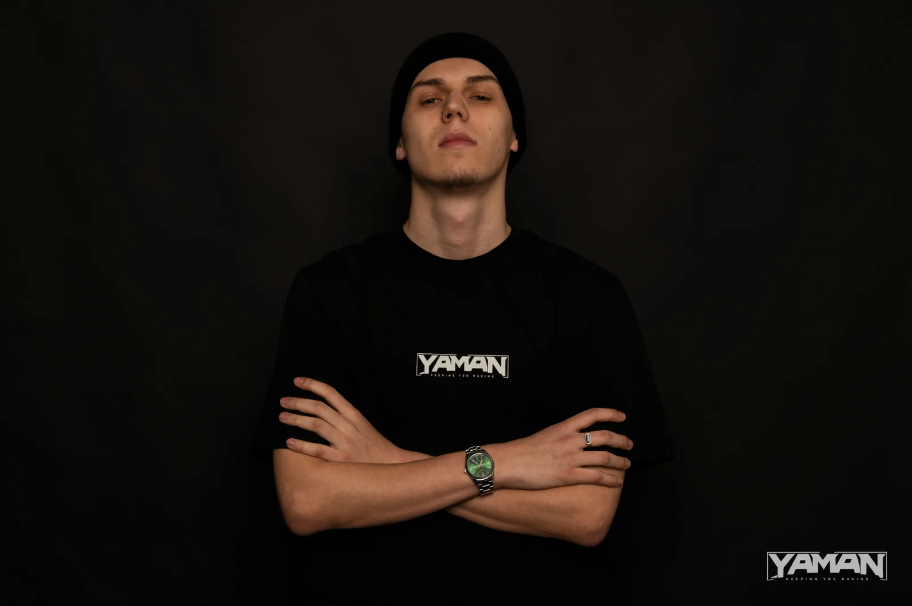

← Zpět na crew← Back to crew
DJ
Mal.Ware
DJ orientovaný na temný neurofunk, industriální energii a masivní bass pressure. Mal.Ware přináší do YAMAN rosteru tvrdý klubový sound stavěný pro temné prostory a silné systémy. DJ focused on dark neurofunk, industrial energy and massive bass pressure. Mal.Ware brings a hard club-driven sound to the YAMAN roster with selections built for dark rooms and heavy systems.